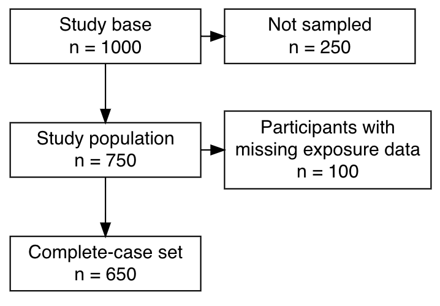

This function plots a flow chart using grViz.
It is restricted to the simple case of sequential exclusions from a single
study population and not suited for CONSORT flowcharts for a
parallel-group study (i.e., a randomized-controlled trial).
The left column describes the flow of the group that ends up
being included. The right column describes exclusions for various
reasons.
Generate the design using make_exclusions.
exclusion_flowchart(design, width = 3)Tibble with the following columns:
left Text for the left box of each row.
n_left Count to be shown as 'n =' in the bottom
of the left box. To skip, use NA_integer_.
right Text for the right box of each row.
n_right Count to be shown as 'n =' in the bottom
of the right box. To skip, use NA_integer_.
Minimum width for all boxes. Defaults to 3 (inches).
Plot rendered using grViz.
For a design with three rows,
the following pseudo-code would be generated:
grViz(paste0("digraph flowchart {
node [fontname = Helvetica, shape = rectangle, width = 4]
tab1a [label = 'left[1] \nn = ", n_left[1], "']
tab1b [label = 'right[1]\nn = ", n_right[1], "']
tab2a [label = 'left[2] \nn = ", n_left[2], "']
tab2b [label = 'right[2]\nn = ", n_right[2], "']
tab3a [label = 'left[3] \nn = ", n_left[3], "']
{ rank = same; tab1a; tab1b; }
{ rank = same; tab2a; tab2b; }
tab1a -> tab2a -> tab3a;
tab1a -> tab1b;
tab2a -> tab2b;
}"))
Note grViz does not automatically
generate line breaks. To avoid extra-wide boxes, manually
supply line breaks using \n. See example.

# Generate a flow chart for two steps of exclusions:
design <- tibble::tribble(
~left, ~n_left, ~right, ~n_right,
"Study base", 1000, "Not sampled", 250,
"Study population", 750, "Participants with\nmissing exposure data", 100,
"Complete-case set", 650, "", NA_integer_)
# Plot
exclusion_flowchart(design, width = 2)